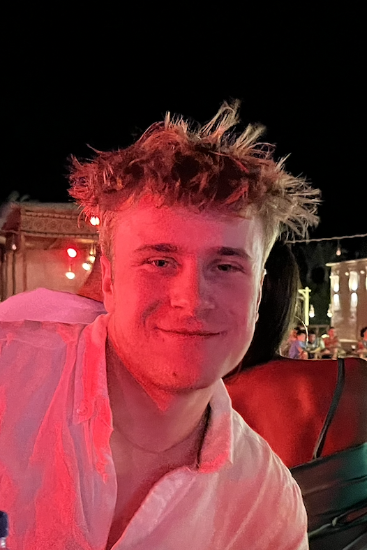

Kai Russenberger
I'm a Mechanical Engineering student at ETH Zürich, focused on the intersection of robotic hardware, control, and machine learning. I enjoy taking robotic systems from the first sketch on paper all the way to a working prototype.
I currently work as a hardware engineer in the Robot Learning division of the ETH Robotics Club, where I help design and build bimanual humanoid platforms for imitation-learning research. Outside of that, I build my own robotic projects to keep learning across mechanical design, electronics, and control.
When I'm not working on a project or school work im either skiing, in the gym, traveling or trying to get the hang of the latest software and tools to aid my work.
Projects
Experience
Designing and building bimanual humanoid platforms for imitation-learning research.
Education
Immersion or AP/IB Track at the mathematical highschool in Zürich